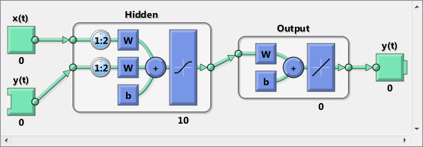
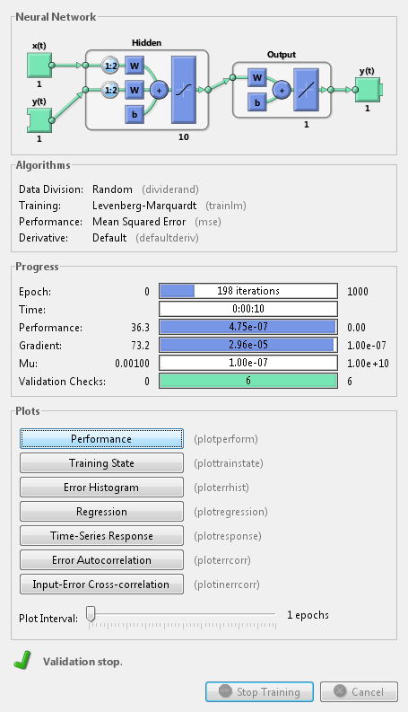
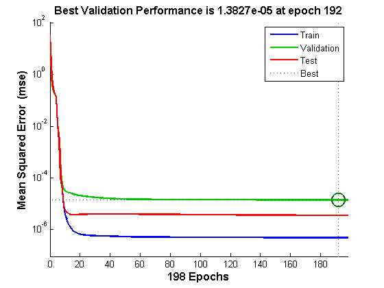
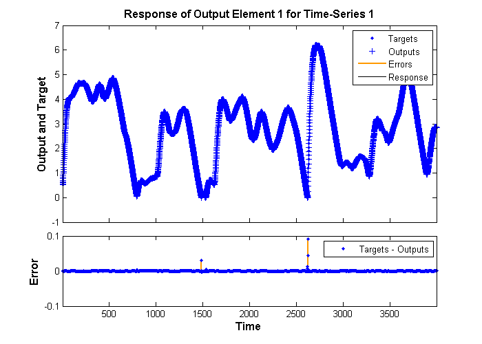
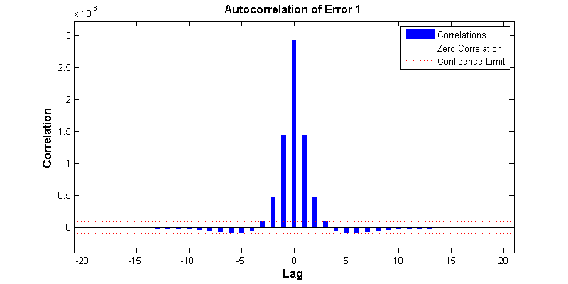
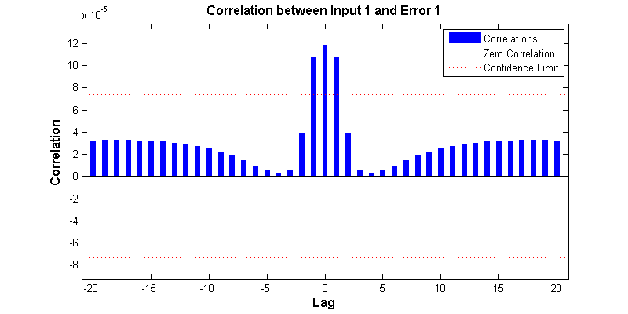
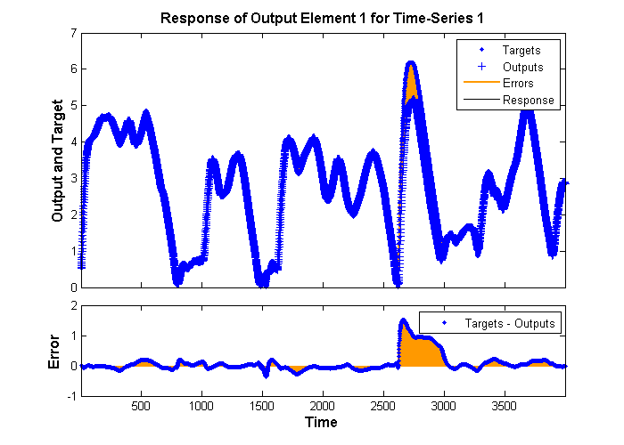

Maglev Modeling
This example illustrates how a NARX (Nonlinear AutoRegressive with eXternal input) neural network can model a magnet levitation dynamical system.
Contents
The Problem: Model a Magnetic Levitation System
In this example we attempt to build a neural network that can predict the dynamic behavior of a magnet levitated using a control current.
The system is characterized by the magnet's position and a control current, both of which determine where the magnet will be an instant later.
This is an example of a time series problem, where past values of a feedback time series (the magnet position) and an external input series (the control current) are used to predict future values of the feedback series.
Why Neural Networks?
Neural networks are very good at time series problems. A neural network with enough elements (called neurons) can model dynamic systems with arbitrary accuracy. They are particularly well suited for addressing non-linear dynamic problems. Neural networks are a good candidate for solving this problem.
The network will be designed by using recordings of an actual levitated magnet's position responding to a control current.
Preparing the Data
Data for function fitting problems are set up for a neural network by organizing the data into two matrices, the input time series X and the target time series T.
The input series X is a row cell array, where each element is the associated timestep of the levitated magnets position.
Here such a dataset is loaded.
[x,t] = maglev_dataset;
We can view the sizes of inputs X and targets T.
Note that both X and T have 4001 columns. These represent 4001 timesteps of the control current and magnet position.
size(x) size(t)
ans =
1 4001
ans =
1 4001
Time Series Modelling with a Neural Network
The next step is to create a neural network that will learn to model how the magnet changes position.
Since the neural network starts with random initial weights, the results of this example will differ slightly every time it is run. The random seed is set to avoid this randomness. However this is not necessary for your own applications.
setdemorandstream(491218381)
Two-layer (i.e. one-hidden-layer) NARX neural networks can fit any dynamical input-output relationship given enough neurons in the hidden layer. Layers which are not output layers are called hidden layers.
We will try a single hidden layer of 10 neurons for this example. In general, more difficult problems require more neurons, and perhaps more layers. Simpler problems require fewer neurons.
We will also try using tap delays with two delays for the external input (control current) and feedback (magnet position). More delays allow the network to model more complex dynamic systems.
The input and output have sizes of 0 because the network has not yet been configured to match our input and target data. This will happen when the network is trained.
The output y(t) is also an input, whose delayed v
net = narxnet(1:2,1:2,10); view(net)
Before we can train the network, we must use the first two timesteps of the external input and feedback time series to fill the two tap delay states of the network.
Furthermore, we need to use the feedback series both as an input series and target series.
The function PREPARETS prepares time series data for simulation and training for us. Xs will consist of shifted input and target series to be presented to the network. Xi is the initial input delay states. Ai is the layer delay states (empty in this case as there are no layer-to-layer delays), and Ts is the shifted feedback series.
[Xs,Xi,Ai,Ts] = preparets(net,x,{},t);
Now the network is ready to be trained. The timesteps are automatically divided into training, validation and test sets. The training set is used to teach the network. Training continues as long as the network continues improving on the validation set. The test set provides a completely independent measure of network accuracy.
The NN Training Tool shows the network being trained and the algorithms used to train it. It also displays the training state during training and the criteria which stopped training will be highlighted in green.
The buttons at the bottom open useful plots which can be opened during and after training. Links next to the algorithm names and plot buttons open documentation on those subjects.
[net,tr] = train(net,Xs,Ts,Xi,Ai); nntraintool
To see how the network's performance improved during training, either click the "Performance" button in the training tool, or call PLOTPERFORM.
Performance is measured in terms of mean squared error, and shown in log scale. It rapidly decreased as the network was trained.
Performance is shown for each of the training, validation and test sets. The version of the network that did best on the validation set is was after training.
plotperform(tr)
Testing the Neural Network
The mean squared error of the trained neural network for all timesteps can now be measured.
Y = net(Xs,Xi,Ai); perf = mse(net,Ts,Y)
perf = 2.9245e-06
PLOTRESPONSE will show us the network's response in comparison to the actual magnet position. If the model is accurate the '+' points will track the diamond points, and the errors in the bottom axis will be very small.
plotresponse(Ts,Y)
PLOTERRCORR shows the correlation of error at time t, e(t) with errors over varying lags, e(t+lag). The center line shows the mean squared error. If the network has been trained well all the other lines will be much shorter, and most if not all will fall within the red confidence limits.
The function GSUBTRACT is used to calculate the error. This function generalizes subtraction to support differences between cell array data.
E = gsubtract(Ts,Y); ploterrcorr(E)
Similarly, PLOTINERRCORR shows the correlation of error with respect to the inputs, with varying degrees of lag. In this case, most or all the lines should fall within the confidence limits, including the center line.
plotinerrcorr(Xs,E)
The network was trained in open loop form, where targets were used as feedback inputs. The network can also be converted to closed loop form, where its own predictions become the feedback inputs.
net2 = closeloop(net); view(net)
We can simulate the network in closed loop form. In this case the network is only given initial magnet positions, and then must use its own predicted positions recursively to predict new positions.
This quickly results in a poor fit between the predicted and actual response. This will occur even if the model is very good. But it is interesting to see how many steps they match before separating.
Again, PREPARETS does the work of preparing the time series data for us taking into account the altered network.
[Xs,Xi,Ai,Ts] = preparets(net2,x,{},t);
Y = net2(Xs,Xi,Ai);
plotresponse(Ts,Y)
 If the application required us to access the predicted magnet position a timestep ahead of when it actually occur, we can remove a delay from the network so at any given time t, the output is an estimate of the position at time t+1.
net3 = removedelay(net); view(net)
Again we use PREPARETS to prepare the time series for simulation. This time the network is again very accurate as it is doing open loop prediction, but the output is shifted one timestep.
[Xs,Xi,Ai,Ts] = preparets(net3,x,{},t);
Y = net3(Xs,Xi,Ai);
plotresponse(Ts,Y)
This example illustrated how to design a neural network that models the behavior of a dynamical magnet levitation system.
Explore other examples and the documentation for more insight into neural networks and their applications.